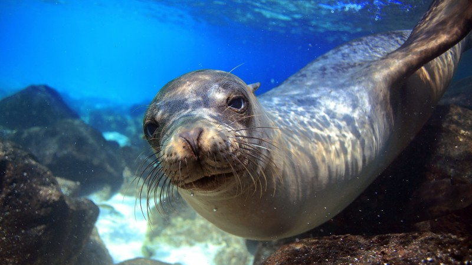

Future Me Career

Previous
Next
OVERVIEW
Marine
Biologist
Duties:
Study marine ecosystems and how they can change based off of environmental factors
Study the effects of climate change on oceanographic processes/effects
Present information in reports, scientific journals, and at conferences
Enviroment:
Can be very hands on where you can be going in the ocean and studying oceanic life
Often times using technology whether in submersible vehicles or tracking technology in an office
Potenital places to work:
Natural Environment Research Councils
Environmental consultancies
Sea life centers
University Research Departments
Fisheries/Fish Farms
Impact:
Plays a vital role in preserving environmental biodiversity
Information and research goes to the government which then is further analyzed to make societal decisions and impacts
Monitors the health of oceans and preserves aquatic ecosystems
Videos With More Information: